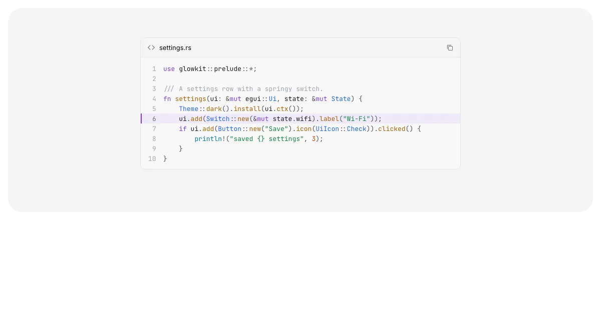

Code Block
Syntax-highlighted code with line numbers, highlighted lines, a file header and a copy button.

Usage
Add glowkit next to eframe:
cargo add glowkit eframeThen draw it inside any egui Ui:
use glowkit::prelude::*;
use glowkit::components::CodeBlock;
ui.add(CodeBlock::new(source).title("settings.rs").highlight_lines(6..=6));Prefer to own the code? The glowkit CLI copies this component's source into your project, shadcn-style:
cargo install glowkit-cli
glowkit add code-blockEquivalent to
If you know this pattern from shadcn/ui, Kibo UI, Magic UI and Aceternity, Code Block is the Rust version: an original egui implementation, not a port, that runs natively and in WebAssembly.
About Code Block
Code Block is one of 15 components in glowkit's Data Display category. It lives in the glowkit-components crate, enabled by the components feature of glowkit (on by default). It reads its colors from the active glowkit theme, so it matches the rest of your app in light, dark or a custom brand theme, and every color, size and timing has a setter to override it.
Ways to show information: data tables, timelines, stat cards, tree views, syntax-highlighted code blocks and diffs, terminals, globes, avatar groups and empty states.